12,1 Mio.
Punkte in einer typischen DALES-Szene (Median)
45.000
Punkte, die ein Chunk hier maximal enthält
≈ 270×
so oft muss die Szene zerlegt werden
Semantische Segmentierung großer ALS-Punktwolken mit Point Transformer V3
Silvio Leon Echsle · Masterarbeit · TU Berlin · Fachgebiet Skalierbare Softwaresysteme
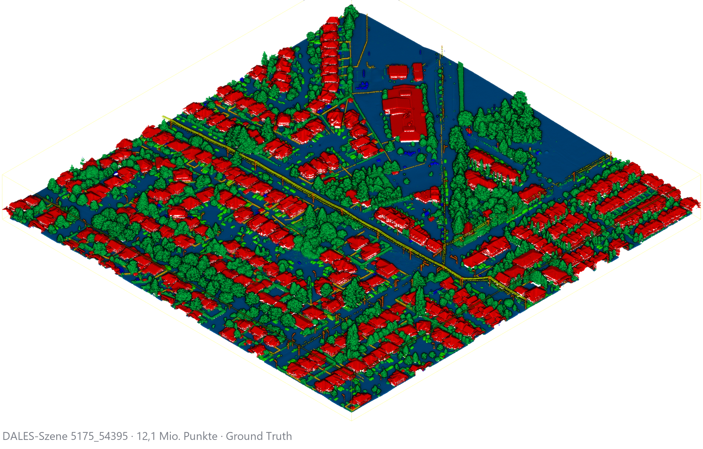
Silvio Leon Echsle s.echsle@web.de
12,1 Mio.
Punkte in einer typischen DALES-Szene (Median)
45.000
Punkte, die ein Chunk hier maximal enthält
≈ 270×
so oft muss die Szene zerlegt werden
500 m × 500 m × 229 m mittlere Ausdehnung. 505 Millionen Punkte im gesamten Datensatz. Ein Transformer sieht davon nie mehr als einen kleinen Ausschnitt gleichzeitig.
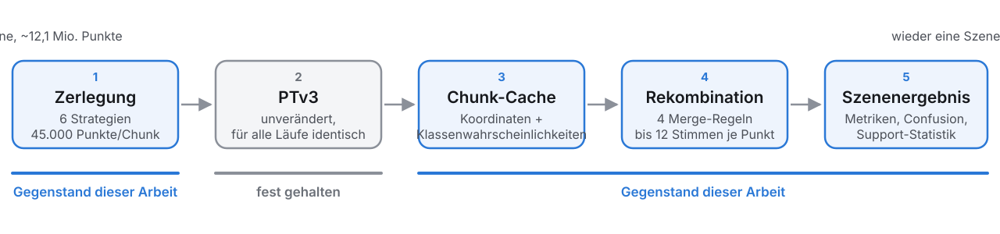
How do decomposition and recomposition strategies affect the accuracy and computational efficiency of transformer-based semantic segmentation for large-scale urban ALS point clouds?
Was variiert
6 Zerlegungsstrategien
4 Rekombinationsregeln
= 24 Kombinationen
Was fest bleibt
Datensatz und Split
Backbone und Trainingsrezept
Chunkgröße 45.000 Punkte
Overlap-Ziel 10 %
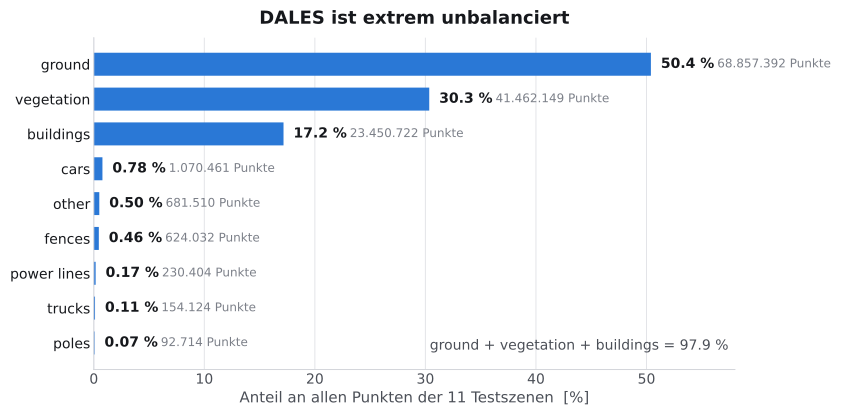
Warum dieser Datensatz
Städtisch, luftgestützt, punktweise annotiert
29 Trainings-, 11 Testszenen
Nur Geometrie + Reflektanz — kein RGB
Die Restklasse other bleibt hier eine echte Zielklasse
Drei Klassen halten 97,9 % aller Punkte. poles sind 0,07 %.
Was es gut kann
Attention nur in lokalen Nachbarschaften, dazu eine Serialisierung über raumfüllende Kurven. Dadurch skaliert es deutlich besser als frühere Point-Transformer.
Was es nicht löst
Die Sequenzlänge bleibt begrenzt. Eine ganze Szene passt weiterhin nicht in einen Durchlauf — die Arbeit zitiert das aus der PTv3-Veröffentlichung selbst.
Genau deshalb ist Zerlegung kein Workaround, sondern Bestandteil der Rechenvorschrift.
Mein Eingriff ins Backbone: +21 / −3 Zeilen.
Verändert habe ich die Maschinerie darum herum — Scheduler, Checkpoint-Politik, Validierungspfad, Loss-Gewichtung und den Ergebnisexport.
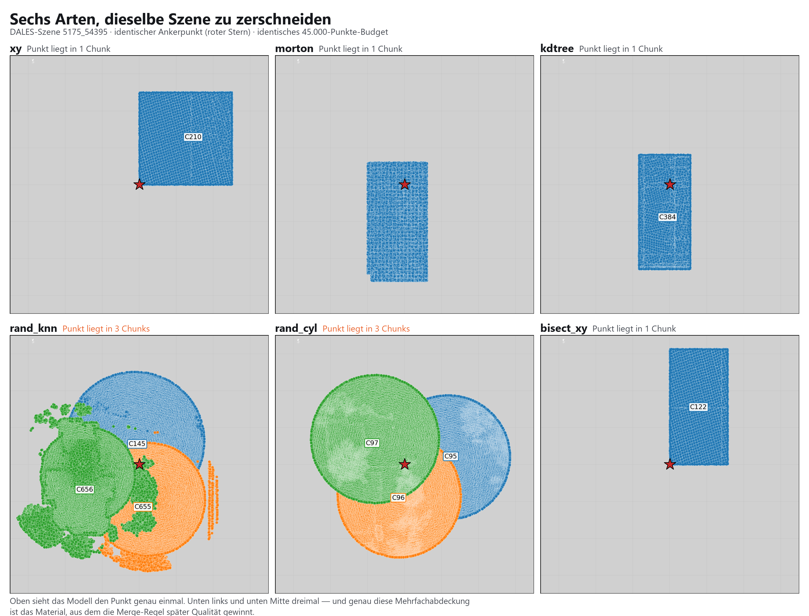
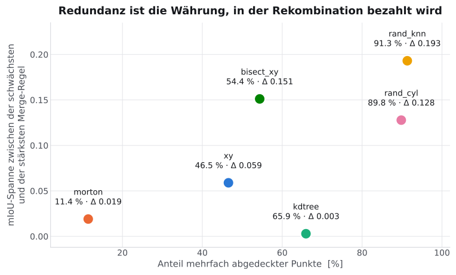
Gemessen, nicht angenommen
Alle sechs Chunker teilen dasselbe nominale Overlap-Ziel von 10 %. Der tatsächliche Anteil mehrfach abgedeckter Punkte reicht von
morton 11,4 % — rand_knn 91,3 %
Ein eigenes Prüfskript misst die echten Schnittmengen zwischen den Chunks einer Szene. Gleiche Vorgabe, völlig verschiedene Geometrie.
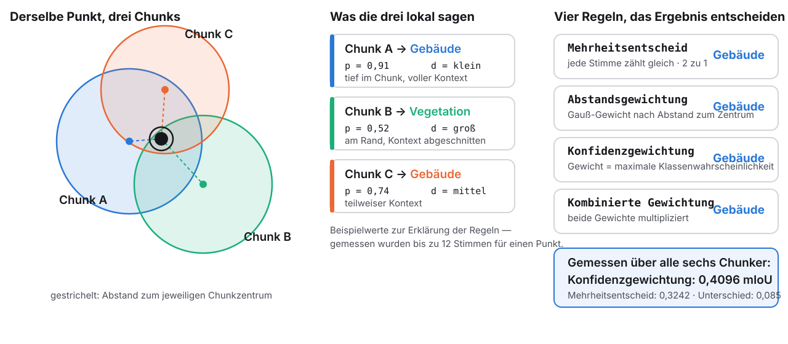
Festgehalten
Datensatz und offizieller 29/11-Split
PTv3m1, Profil minimal/minimal
AdamW, lr 5e-4, ReduceLROnPlateau
16 % Holdout, Seed 42
Early Stopping: Patience 8, max. 30 Epochen
CE + Lovász, inverse Frequenzgewichtung
13-View Test-Time-Augmentation
Chunkbudget 45.000, Overlap-Ziel 10 %
Checkpoint: bestes Holdout-mIoU, ohne Nachauswahl
Variiert
Chunker
Merge-Regel
Berichtet, nicht variiert
Eine einzige Ausnahme: Für morton musste die Quantisierung im Validierungspfad von
0,004 m auf 0,01 m vergröbert werden, weil PTv3s Serialisierung an eine Tiefengrenze lief.
Der Testpfad blieb identisch.
Auch die Gitterparameter wurden nicht von Hand gesetzt, sondern aus einer gemeinsamen Dichtestatistik abgeleitet.
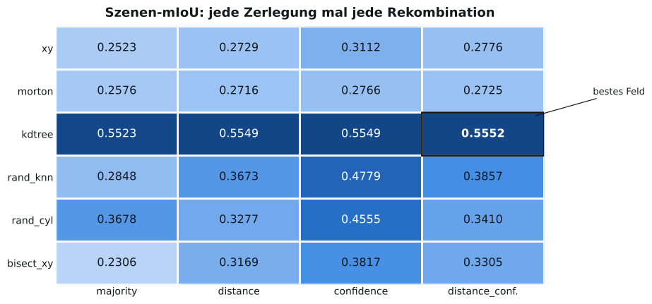
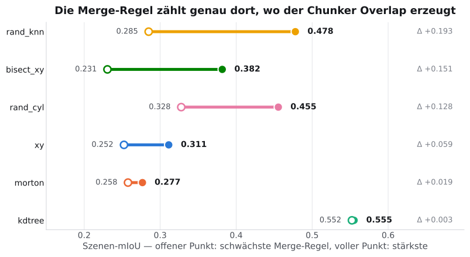
0,5552
bestes Szenen-mIoU: kdtree + distance_confidence
0,4096
confidence ist im Mittel die beste Merge-Regel
+0,193
was die Merge-Regel bei rand_knn bewegt
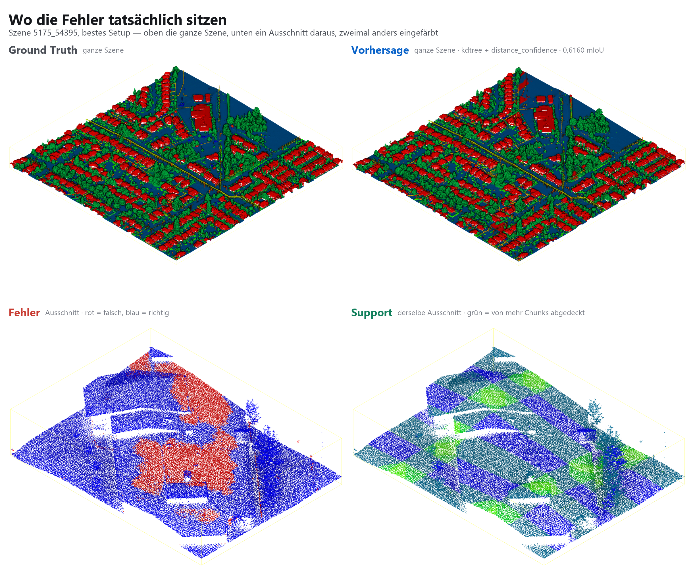
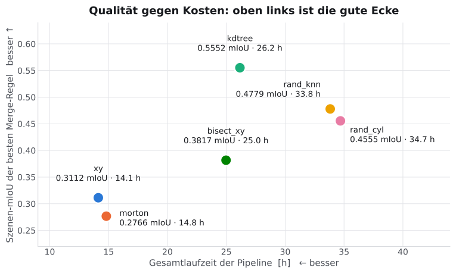
Der Durchsatz des Modells ist über alle Chunker praktisch konstant: 0,275 bis 0,285 Chunks pro Sekunde. Die Kosten entstehen woanders — aus der Anzahl erzeugter Chunks, der Redundanz und der Trainingsdauer.
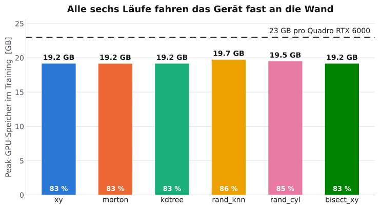
Alle sechs Läufe liegen bei 83 bis 86 % des GPU-Speichers. Das reduzierte Modellprofil war keine Vorsicht, sondern Voraussetzung.
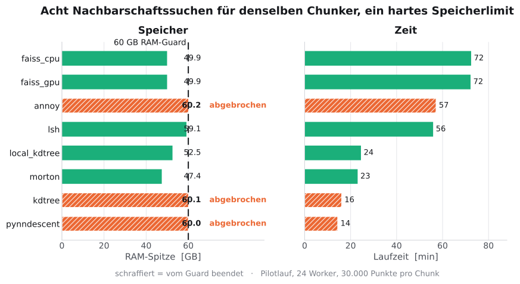
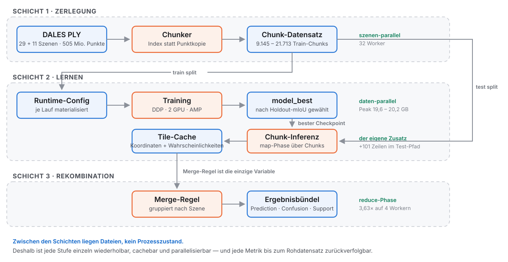
 NumPy
NumPy
 Python 3.10
SciPy
Numba
FAISS
Python 3.10
SciPy
Numba
FAISS
 PyTorch 2.5
PyTorch 2.5
 CUDA 12.4
Pointcept
PTv3
NumPy
Matplotlib
CUDA 12.4
Pointcept
PTv3
NumPy
Matplotlib
 Jupyter
Jupyter
 Git
Git
 Bash
PowerShell
Bash
PowerShell
 Flask
Flask
 JavaScript
JavaScript
 HTML
HTML
 CSS
REST
CSS
REST
 pytest
pytest
 LaTeX
AsciiDoc
Reveal.js
LaTeX
AsciiDoc
Reveal.js
Kein Logo ohne Beleg im Repository. Docker und CI stehen zwar im Fork, gehören aber zu Pointcept — deshalb fehlen sie hier.
Vorher — im Thesis-Fork
Punktidentität über gerundete Koordinaten
Chunk-Verzeichnisse mit .npy
Keine Integritätsprüfung
Läuft nur mit Pointcept und PyTorch
Bedienung über ein Notebook
Nachher — als Bibliothek
Explizite, geprüfte source_id je Punkt
Versioniertes ZIP mit Manifest
SHA-256 je Chunk, Prüfung beim Merge
Nur NumPy — Pointcept ist keine Abhängigkeit mehr
106 grüne Tests, HTTP-API, eigene Lizenz
Gleiche Algorithmen, anderer Vertrag: Aus Code, der im Experimentkontext richtig war, wurde Code, der auch außerhalb hält.
1 Punktwolke laden
2 Metadaten prüfen
3 Strategie wählen
4 Chunken
5 Chunks ansehen
6 Rekonstruieren
Demo starten
Erwartetes Ergebnis: 2.304 Punkte → 16 Chunks bei Redundanz 2,7778 → wieder
exakt 2.304 Punkte. Die Rekonstruktion läuft über die stabilen source_id, nicht über
gerundete Koordinaten.
Fachlich
Zerlegung und Rekombination sind methodische Variablen, keine Implementierungsdetails
kdtree ist der stärkste Chunker — und gewinnt schon vor der Fusion
confidence ist die beste Default-Merge-Regel
Rekombination zahlt sich proportional zur erzeugten Redundanz aus
Übertragbar
Eine Ressourcengrenze ist eine messbare Bedingung, kein Hindernis
Persistente Stufengrenzen machen eine Pipeline wiederholbar und parallelisierbar
Ein Datenvertrag mit stabilen IDs und Prüfsummen ist der Unterschied zwischen Forschungscode und Software
Ein Ergebnis ist erst fertig, wenn es jemand anderes bedienen kann
Grenzen, die ich nennen muss: ein Backbone, ein Datensatz, ein Punktbudget, ein Overlap-Ziel, keine Seed-Wiederholungen. Der Vergleich ist deskriptiv, nicht statistisch abgesichert.
Folien für Nachfragen — nicht Teil des Vortrags.
Aktuellste Generation der Point-Transformer-Reihe, 2024
Serialisierte Attention über raumfüllende Kurven statt globaler Nachbarschaftssuche
Starke Kontextabhängigkeit — genau die Eigenschaft, die auf Zerlegung reagiert
Ein schwächeres Kontextmodell hätte den untersuchten Effekt kleiner erscheinen lassen
Bewusst außerhalb: Superpoint- und Supertoken-Ansätze, weil sie Repräsentation und Lokalitätsmechanismus gleichzeitig ändern und die Effekte vermischen würden
Städtisches ALS, punktweise annotiert, öffentlicher Benchmark mit offiziellem Split
Szenengröße macht Skalierbarkeit zu einem echten, nicht theoretischen Problem
Starke Klassen-Imbalance: 97,9 % in drei Klassen
Nur Geometrie + Reflektanz — die Zerlegung entscheidet, wie viel Kontext bleibt
Externe Vergleichbarkeit über die publizierten Baselines des Originalpapiers
| Strategie | Prinzip | Aktive Parameter |
|---|---|---|
| Reguläres achsparalleles Gitter in der Ebene; provisorische Fenster werden rekursiv geteilt, bis das Budget hält |
|
| Quantisierung, Bit-Interleaving zu einem Morton-Schlüssel, Sortierung, zusammenhängende Blöcke |
|
| Rekursive achsparallele Median-Teilung in der Ebene bis zum Budget |
|
| Seed-Punkt, k nächste Nachbarn im vollen 3D-Raum; nächster Seed als nächster unbearbeiteter Kandidat außerhalb der aktuellen Stütze |
|
| Wie |
|
| Rekursive Halbierung entlang der jeweils längeren Horizontalachse, mit Überlappung an der Schnittlinie |
|
Für unterfüllte Chunks gibt es eine chunker-konsistente Auffüllregel: Gitter-, k-d-Tree- und Bisektions-Blätter werden mit den nächstliegenden Punkten außerhalb ihres Stützbereichs aufgefüllt, Morton-Chunks mit benachbarten Positionen in der Morton-Ordnung. Die beiden stochastischen Nachbarschafts-Chunker erzeugen konstruktionsbedingt keine unterfüllten Chunks.
Gemeinsames nominales Ziel von 10 %, aber unterschiedliche geometrische Mechanismen
kdtree und bisect_xy: fill_to_budget — die Blätter werden über ihre Grenze hinaus
bis zum Punktbudget aufgefüllt
morton: stride_overlap — die Blöcke werden mit Schrittweite kleiner als Blocklänge
gebildet
rand_knn / rand_cyl: Der nächste Seed ist der nächstgelegene noch unbearbeitete
Kandidat direkt außerhalb der aktuellen Stütze; bereits bearbeitete Punkte dürfen weiterhin
als Nachbarn auftauchen. Daraus entsteht ein Frontier-Verlauf mit hohem Overlap
Gemessene Duplikatanteile: 11,4 % · 46,5 % · 54,4 % · 65,9 % · 89,8 % · 91,3 %
Maximaler Support je Punkt: bis zu 12 überlappende Vorhersagen bei rand_knn
Für einen Szenenpunkt u, überdeckt von der Chunkmenge T(u), mit der lokalen
Wahrscheinlichkeit p_k aus Chunk t:
majority — s_k(u) = Σ_t v_k(u,t) über One-Hot-Votes. Gleichstand wird
deterministisch über den kleinsten Klassenindex aufgelöst.
gewichtete Form — s_k(u) = ( Σ_t w_t · p_k ) / ( Σ_t w_t ). Die drei folgenden Regeln
unterscheiden sich nur in w_t.
distance — w_t = exp( −d_t² / 2σ_t² ), wobei d_t der Abstand zum Chunkzentrum ist
und σ_t aus der Streuung der Punkt-zu-Zentrum-Abstände desselben Tiles stammt.
confidence — w_t = m_t^α mit m_t = max_k p_k, also der maximalen
Klassenwahrscheinlichkeit der lokalen Vorhersage.
distance_confidence — das Produkt beider Gewichte.
Implementiert als eine gewichtete Akkumulation über np.bincount; die Regel ändert nur
das Gewicht. support_count fällt dabei als Nebenprodukt ab.
Gewichtete Cross-Entropy mit inverser Frequenzgewichtung:
w_c = ( (n̄ + ε) / (n_c + ε) )^γ, hier ε = γ = 1, wobei n_c die Punktzahl der Klasse
im Batch und n̄ das Mittel über die im Batch vorhandenen Klassen ist
Die Restklasse other wird zusätzlich mit β = 0,2 heruntergewichtet,
danach werden die Gewichte auf Mittelwert eins renormiert
Loss-Stack: Cross-Entropy plus Lovász-Softmax, beide mit Gewicht 1;
Focal-Modulation deaktiviert (focal_gamma = 0)
Begründung: Lovász ist ein differenzierbarer IoU-Surrogat und zieht das Training zur Evaluationsmetrik; CE hält die punktweisen Wahrscheinlichkeiten scharf
| Komponente | Ausstattung |
|---|---|
CPU | Dual-Socket Intel Xeon E5-2630 v4, 20 Kerne / 40 Threads, 2,20–3,10 GHz |
RAM installiert | ≈ 252 GiB |
RAM praktisch nutzbar | ≈ 48 GB, kein Swap konfiguriert |
GPU-Pool im Host | 2 × Quadro RTX 6000 (23 GB) · 1 × RTX 5000 (16 GB) · 3 × RTX 4000 (8 GB) |
GPUs im Experiment | fixe 2 × 23 GB |
Speicher | SSD, 400 GB + 500 GB RAID1 plus weitere SSDs |
Software | Python 3.10, PyTorch 2.5, CUDA 12.4, Conda-Env |
Die nutzbaren 48 GB — nicht die installierten 252 — sind der Grund für den RAM-Guard und für die Entscheidung, das Chunking als persistenten Vorverarbeitungslauf zu externalisieren.
| Einstellung | Wert |
|---|---|
Batch-Größe (effektiv) | 2 (2) |
Optimierer | AdamW, lr 5·10-4, Block-LR-Ratio 0,1 |
Scheduler | ReduceLROnPlateau, Faktor 0,5, Threshold 10-3, EMA α 0,2 |
Holdout | 16 % der Trainings-Chunks, Seed 42 |
Early Stopping | Patience 8, Min-Delta 10-3, max. 30 Epochen |
Mixed Precision | an · Gradient Clipping 20,0 |
Loss | CE + Lovász, inverse Frequenz, |
Eingabe | x, y, z, Reflektanz |
Test | 13-View Test-Time-Augmentation |
Modellprofil |
|
Tatsächlich trainierte Epochen bis zum Early Stop: xy 6 · morton 9 · kdtree 11 ·
rand_knn 12 · rand_cyl 14 · bisect_xy 11 — alle sechs Läufe endeten durch
Early Stopping, keiner lief die 30 Epochen aus.
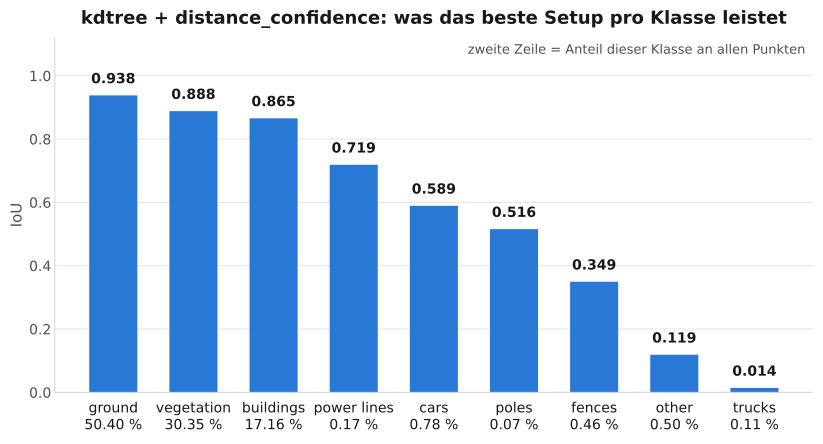
Die drei dominanten Klassen sind gelöst. poles erreicht 0,516 bei 0,07 % Punktanteil —
das ist bemerkenswert. trucks bei 0,014 ist es nicht: Nur die beiden
Nachbarschafts-Chunker erreichen dort überhaupt Werte über null (0,099 und 0,123).
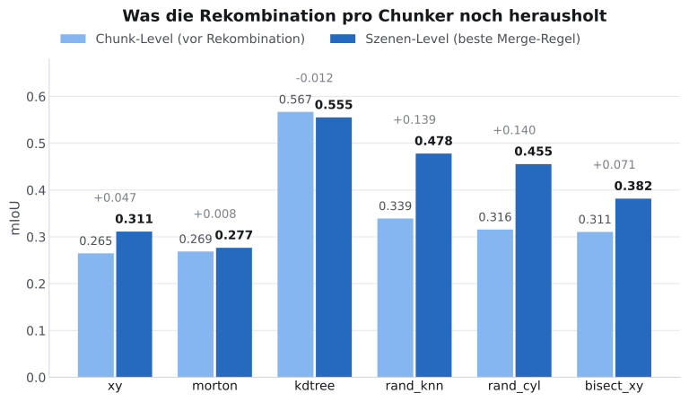
kdtree verliert durch die Rekombination minimal (−0,012), weil es schon auf Chunk-Ebene
sehr stark ist. Die Nachbarschafts-Chunker gewinnen jeweils rund 0,14 — sie liefern
komplementäre Belege, die erst die Fusion nutzbar macht. morton gewinnt 0,008, weil es
kaum Overlap erzeugt.
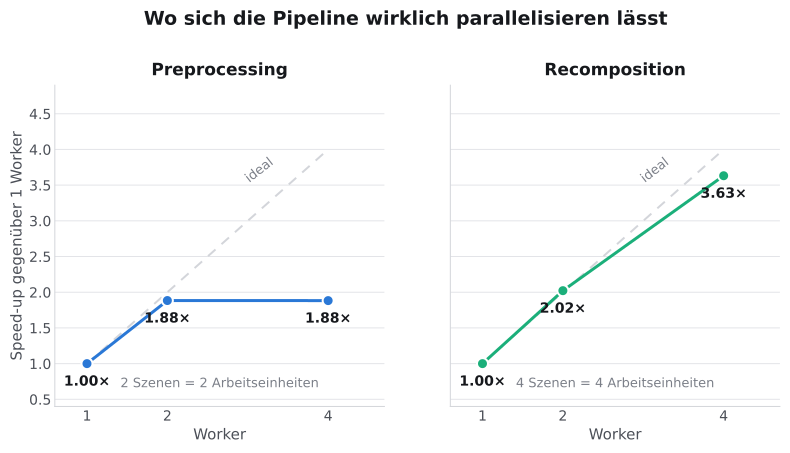
Der Preprocessing-Speedup endet bei 1,88-fach, weil der Pilot nur zwei Szenen umfasste und die Szene die Arbeitseinheit ist — bei vier Workern bleibt nichts mehr zu verteilen. Die Rekombination mit vier unabhängigen Szenen erreicht 3,63-fach bei 91 % paralleler Effizienz. In den finalen Läufen ist die Rekombination bewusst sequenziell geblieben, weil ihr Anteil an der Gesamtlaufzeit gering war.
Feste planare Fenster garantieren kein Punktbudget. In dichten Regionen überschreitet
ein xy-Fenster die 45.000 Punkte. Lösung: Fenster gelten nur als provisorische Stütze und
werden rekursiv entlang alternierender Achsen geteilt.
Morton brachte PTv3s Serialisierung an eine Tiefengrenze. Langgestreckte Validierungs-Chunks liefen über. Lösung: gröbere Quantisierung nur im Validierungspfad.
Die OOM-Sonde für das Punktbudget scheiterte an sich selbst. Das aufbewahrte Ergebnis
zeigt oom: false, return_code: 1 — ein Konfigurationsfehler, kein Speicherproblem.
Daraus wird bewusst keine Zahl verwendet.
Cluster-basierte Chunker kamen nicht ins Experiment. k-Medoids, CLARANS, DIANA, CURE und dichtebasierte Varianten sind implementiert bzw. als Platzhalter reserviert, aber ausdrücklich ausgeschlossen. Der Anhang listet 19 Kandidaten mit Rolle, erwartetem Vorteil und Implementierungsrisiko.
Graph-CRF-Glättung ist implementiert, war in den finalen Läufen aber deaktiviert
(crf_iters = 0) und wird deshalb nicht als Ergebnis gezeigt.
| Bereich | Umfang | Herkunft |
|---|---|---|
Die sechs Chunker ( | ≈ 3.100 Zeilen | neu angelegt |
Die vier Merge-Regeln ( | 291 Zeilen | neu angelegt |
Validierung, Benchmarks, Ressourcenschutz, Visualisierung | 33 Skripte | neu angelegt |
Experimentsteuerung | 10.088 Zeilen | neu angelegt |
Scheduler-Integration | +441 / −5 | Upstream erweitert |
Trainings-Hooks, Checkpoint-Politik | +413 / −43 | Upstream erweitert |
Trainingsloop, Holdout, Early Stopping | +366 / −18 | Upstream erweitert |
Loss-Gewichtung | +218 / −29 | Upstream erweitert |
Tile-Export für die Rekombination | +101 / −16 | Upstream erweitert |
PTv3-Backbone | +21 / −3 | praktisch unverändert Upstream |
CUDA-Kernel ( | 103 Dateien | reiner Upstream |
Dockerfile-Generator, Formatter-CI | 2 Dateien | reiner Upstream (Pointcept-Autoren) |
Ermittelt über git log --author --diff-filter=A und --numstat. Der Einsatz generativer
KI-Werkzeuge als Hilfsmittel ist in der Arbeit selbst deklariert.
Parameterstudie statt fester Einstellung, vor allem für den Overlap; auf der Ordnungsseite Hilbert- statt Morton-Kurve
Struktur-geführtes Chunking: erst semantische Kerne über Clustering finden, dann bis zum Budget aufweiten — HDBSCAN, DBSCAN und OPTICS sind die plausibelsten Kandidaten
Kalibrierte Confidence-Fusion über Temperature Scaling; vorher fehlt noch die einfachste Baseline — reines Mitteln der Wahrscheinlichkeitsvektoren
Randgewichtung schon im Loss: Punkte nahe dem Chunkzentrum stärker gewichten, weil Randpunkte in überlappungsreichen Chunkern eine zweite Chance bekommen
Systems-Seite: Chunk-Index von Tile-Export trennen, Rekombination parallelisieren, Lineage-basiertes Wiederverwenden von Zwischenergebnissen
Transfer des Protokolls auf andere Datensätze und Backbones